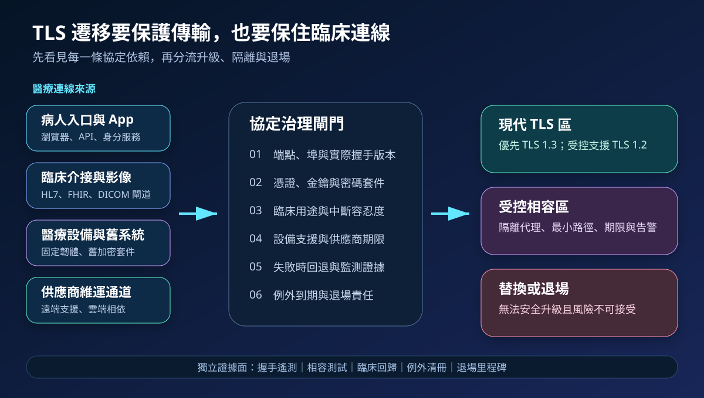
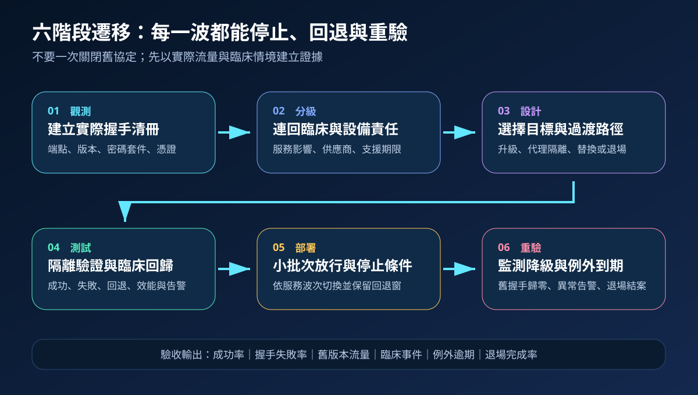
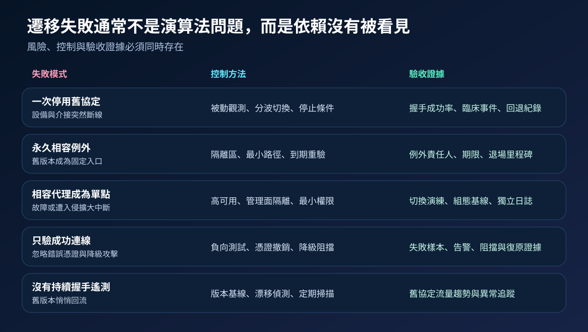

醫療資安國際觀察 · 2026-11-28
醫療 TLS 遷移如何避免舊設備斷線：從協定清冊到受控退場
作者：Dr. William｜醫療資訊與資安治理實務工作者
醫院不能只把舊 TLS 版本關閉後觀察是否有人報修；安全遷移必須先看見真實握手、連回臨床服務與設備責任，再以分波切換、受控相容區及退場期限同時維持傳輸保護與照護可用性。
名詞解釋：TLS、密碼套件與協定降級
TLS 是保護網路傳輸機密性、完整性與端點身分的協定；密碼套件定義金鑰交換、加密與完整性機制的組合；協定降級是連線落回較舊版本或較弱能力。醫療環境還需處理固定韌體設備、舊式介接引擎、供應商遠端維護與長生命週期系統，因此遷移範圍不能只看網站伺服器。
國際現況與適用邊界
NIST 於 2026 年 11 月 19 日決定修訂 SP 800-52 Rev.2；修訂方向包含弱化 TLS 1.2 的預設建議地位、原則上不再允許 TLS 1.0／1.1、更新 TLS 1.3 演算法、憑證、撤銷與後量子遷移指引。FDA 於 2026 年 2 月發布醫療設備資安最終指引，將安全通訊、更新能力、生命週期風險與上市後管理納入設計及文件考量。HHS OCR 2026 年資安月資料則把傳輸安全置於風險分析與合理適當措施脈絡下。
法域與適用原則：NIST SP 800-52 的強制語氣針對美國聯邦政府系統；FDA 指引適用於其醫療設備監管範圍；HHS OCR 資料服務於美國 HIPAA 受規範實體。上述資料不直接形成台灣醫療機構的法定 TLS 版本要求。台灣院所應依本地規範、設備核准狀態、契約、資料敏感度與臨床安全決定技術基線及例外層級。
對台灣醫療機構的影響
TLS 遷移常跨越病人入口、FHIR／HL7 API、影像閘道、實驗室設備、中介軟體與遠端維運。若清冊只記錄主機名稱，會漏掉負載平衡器後端、批次工作、憑證釘選、硬編碼密碼套件及不支援更新的設備。每條連線應連結服務擁有者、臨床用途、資料類型、設備型號、韌體版本、供應商支援期限與可接受中斷時間。
規劃：以臨床服務定義遷移波次
目標基線應明確列出允許版本、密碼套件、憑證鏈、金鑰長度、撤銷檢查與例外期限。遷移波次可依外部曝險、資料敏感度、主動利用風險、臨床關鍵性及替代流程排序。驗收指標包括握手成功率、舊版本流量、錯誤憑證阻擋率、臨床交易成功率、回退次數、相容例外逾期數及替換里程碑完成率。
實作：六階段完成可回退的遷移
- 被動觀測：蒐集實際握手版本、密碼套件、憑證與端點，不以掃描結果取代流量事實。
- 相依分級：連回臨床服務、設備責任、供應商支援與降級流程。
- 設計路徑：可升級者進入現代 TLS；暫時受限者使用隔離代理；不可接受者替換或退場。
- 隔離測試：驗證成功、失敗、撤銷、降級阻擋、效能、告警與臨床回歸。
- 分波部署：先小範圍切換，設定停止條件與回退窗，再逐步擴大。
- 持續重驗：監測舊握手回流、例外到期、供應商更新與退場證據。

風險：相容措施可能形成新的脆弱點
相容代理若缺少高可用與管理面隔離，會成為中斷或入侵單點；只驗證正常連線，會漏掉錯誤憑證、撤銷失敗與降級攻擊；例外若沒有責任人和期限，舊協定會永久存在；缺少持續握手遙測，系統更新或供應商變更後可能悄悄回流。控制必須同時覆蓋可用性、機密性、完整性與可追溯性。

可執行清單
- 是否以實際握手遙測建立端點、版本、套件與憑證清冊？
- 每條連線是否連到臨床服務、設備、供應商與責任人？
- 目標 TLS 基線、停止條件與回退方式是否已核准？
- 是否完成錯誤憑證、撤銷、降級、效能與臨床回歸測試？
- 相容代理是否高可用、隔離管理並留下獨立日誌？
- 每項例外是否有到期日、替換預算與退場里程碑？
- 是否持續監測舊版本回流、握手失敗與異常降級？
來源
- NIST｜NIST to Revise SP 800-52 Rev.2（發布：2026-11-19；查閱：2026-11-28）
- NIST｜SP 800-52 Rev.2, Guidelines for TLS Implementations（發布：2019-08-29；查閱：2026-11-28）
- FDA｜Cybersecurity in Medical Devices: Quality Management System Considerations and Content of Premarket Submissions（發布：2026-02-03；查閱：2026-11-28）
- HHS OCR｜Cybersecurity Awareness Month 2026（發布：2026-10；頁面審查：2026-11-03；查閱：2026-11-28）
內容說明
本文依健康台灣深耕計畫相關治理內容整理，並參考 NIST、FDA 與 HHS 官方資料，說明醫療 TLS 協定清冊、分波遷移、舊設備相容、臨床回歸與退場驗收；不把美國聯邦政府、醫療設備監管或 HIPAA 實作資料視為台灣醫療機構的直接法定義務，也不取代本地主管機關要求、設備風險評估與臨床安全驗證。